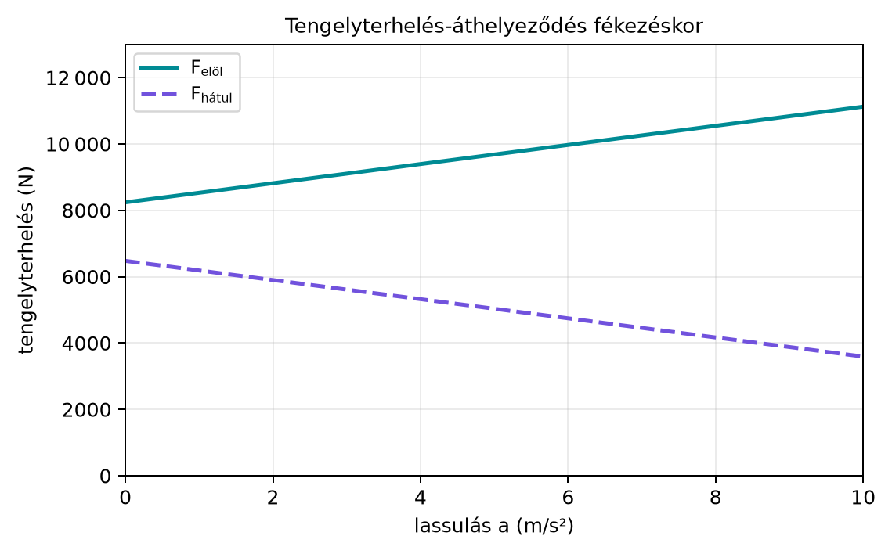

A műhelyben az egyik leggyakoribb ügyfélpanasz: „hosszú a fékút”, „a fék nem fog rendesen”, vagy éppen „a műszaki vizsgán megbukott a fékhatás”. Ilyenkor nem elég betétet cserélni: a szerelőnek tudnia kell, mit jelent a fékhatás, hogyan függ a fékút a sebességtől, miért tolódik el a tengelyterhelés fékezéskor, és miért követeli meg az előírás a kétkörös fékrendszert. Ez az alfejezet ezt az alapot adja meg: a fékezés fizikáját, a fékek osztályozását és a hatósági követelmények szerkezetét.
Képzelj el egy átlagos személyautót, amely 50 km/h sebességről vészfékez. A vezető észleli az akadályt, majd kb. 1 másodperc elteltével teljes erővel lenyomja a fékpedált. A fékek néhány tizedmásodperc alatt felépítik a lassulást, közben a karosszéria előrebólint, az első rugók összenyomódnak, a hátsók megemelkednek. A kerekek az út és a gumi közötti tapadási erőt használják fel, hogy a jármű mozgási energiáját hővé alakítsák. Az alábbi diagram a tengelyterhelés-áthelyeződést mutatja a lassulás függvényében egy szemléltető, 1500 kg tömegű járműre.

A diagram azt mutatja, hogy a lassulás növekedésével az első tengely terhelése nő, a hátsóé csökken. Ezért a fékerőt nem lehet egyenlő arányban elosztani, hanem a tényleges dinamikus tengelyterheléshez kell igazítani.
Definíció. A fékrendszer a jármű mozgását lassító, megállító, illetve álló helyzetben rögzítő szerkezetek összessége. A fék a mozgási energiát elsősorban súrlódás útján hővé alakítja.
A fékrendszereket feladatuk szerint osztályozzuk:
Definíció. A lassulás a sebesség csökkenésének időbeli mértéke, mértékegysége . A fékhatás a lassulás és a nehézségi gyorsulás hányadosa, gyakran százalékban adják meg:
ahol . Például ha egy jármű lassulással fékez, a fékhatása , azaz .
Definíció. A fékút a fékezés megkezdésétől a jármű megállásáig megtett út. A reakcióidő a vezető észlelésétől a fékpedál megnyomásáig eltelő idő, jellemzően –. A fékkésedelem a fékpedál lenyomásától a tényleges fékhatás fellépéséig tartó idő, jellemzően –. A reakcióidő és a fékkésedelem alatt a jármű közel állandó sebességgel továbbhalad, ezért a teljes megállási út nagyobb, mint a tiszta fékút.
Egyenletes lassulást feltételezve a Kinematika és kinetika: mozgás, erő, munka, teljesítmény, energia alfejezetben tanult kinematikai képletből indulunk ki. Mivel a sebesség a végén nulla, , és a lassulás negatív, a megálláshoz szükséges tiszta fékút:
Ha a fékezést a tapadási tényező korlátozza, a maximális lassulás , ezért . A teljes megállási út a reakcióidő és a fékkésedelem alatt megtett úttal növelt érték:
ahol a fékkésedelem. A példákban -t elhanyagoljuk, így a képlet alakra egyszerűsödik.
A sebességet általában -ban adják meg, ezért át kell váltani -ra: .
Fékezéskor a jármű tömegközéppontjában ható tehetetlenségi erő előre mutat. Ez az erő a súlypont magasságában () támad, és előrebillentő nyomatékot hoz létre. A tengelyeknél ébredő függőleges támasztóerők megváltoznak: az első tengely terhelése megnő, a hátsóé csökken. A terhelésváltozás nagysága:
ahol a tengelytáv, a jármű tömege, a lassulás, a súlypontmagasság. A dinamikus tengelyterhelések:
Ebből következik, hogy nagyobb lassulásnál a hátsó tengely terhelése annyira lecsökkenhet, hogy a hátsó kerekek hamarabb blokkolnak, ha a fékrendszer fékerő-elosztása merev. Ezért az ideális fékerő-elosztás olyan eloszlás, amely a tényleges dinamikus tengelyterhelésekhez igazodik, így minden kerék a tapadási határ közelében dolgozik, és egyik tengely sem blokkol korábban. A mai járművekben ezt az ABS és az elektronikus fékerő-elosztó (EBV) valósítja meg.
Számítás.
Egy személyautó
sebességről vészfékez. A fékhatás
,
a reakcióidő
,
a fékkésedelmet elhanyagoljuk. Mekkora a tiszta fékút és a teljes
megállási út?
Adott:
,
,
.
Keresett:
,
.
Átváltás:
.
Tiszta fékút:
A reakcióidő alatt megtett út:
Teljes megállási út:
Ellenőrzés:
fékhatás mellett a lassulás
,
a fékút nagyságrendje reális.
Számítás.
Ugyanaz a jármű
sebességről fékez, a fékhatás csak
,
a reakcióidő
.
Átváltás:
.
Tiszta fékút:
Reakcióút:
.
Teljes megállási út:
.
Tanulság: a sebesség duplázásával a tiszta fékút négyszeresére
nő, a reakcióút pedig kétszeresére, ezért a teljes megállási út a
nagyobb sebességnél aránytalanul nő.
Az ábrán a sraffozott reakcióút a sebességgel egyenes arányban, a szürke fékút a sebesség négyzetével nő: 50 km/h-nál m, 100 km/h-nál (azonos és mellett) m, vagyis a kétszeres sebességhez kb. háromszoros megállási út tartozik. A HTML-kiadás kalkulátorában a kezdősebesség, a reakcióidő, a fékkésedelem és a fékhatás állítható; a sebesség–idő diagramon a reakcióút a téglalap, a fékút a háromszög területe.
Számítás és ellenőrzés.
Egy fékpadon mért átlagos lassulás
.
Mekkora a fékhatás?
Ez rendszerint megfelel a műszaki vizsga követelményeinek, de a pontos
határértéket a hatályos előírás adja meg (ellenőrizendő).
Hibás példa.
Egy tanuló a fékutat így számolja:
,
,
ezért
.
Mi a hiba?
A hiba: a sebességet nem váltotta át
-ra.
Helyesen
,
így
.
Ez a nagyságrendi hiba tipikus.
Előírás.
A közúti járművek fékrendszereire az ENSZ-EGB előírásai vonatkoznak,
különösen az ECE R13 (nagyobb járművek és légfékek) és az ECE R13-H
(személygépkocsik hidraulikus fékrendszerei). Az EU típusjóváhagyási
keretében ezeket az előírásokat alkalmazzák. A pontos számértékeket nem
adjuk meg általánosan, mert járműkategóriánként eltérőek, és a hatályos
szövegekben ellenőrizendők: az üzemi fékre előírt minimális fékhatás
jellemzően
–
körüli, a rögzítőféknek pedig adott emelkedésű lejtőn kell megtartani a
járművet (ellenőrizendő: ECE R13-H és a hazai rendelet aktuális
követelményei).
Előírás.
A hidraulikus fékrendszernek kétkörösnek kell lennie: a
rendszert úgy kell kialakítani, hogy az egyik kör meghibásodása (például
csőtörés) esetén a másik kör még fékhatást biztosítson. Ez általában
átlós (X) elrendezéssel vagy elöl–hátul osztással valósul meg. A
kétkörösség követelménye az ECE előírásokból és a hazai műszaki
vizsgálati szabályokból következik (ellenőrizendő: 6/1990. (IV. 12.)
KÖHÉM rendelet és módosításai). A műszaki vizsgán a fékhatást
fékerő-mérő padon vagy lassulásmérővel ellenőrzik, és a két kör
egyenként is vizsgálható.
Előírás.
A fékrendszer elemeire gyártói javítási adatokat kell használni: a
betétek, tárcsák, dobok kopási határait, a fékfolyadék cseréjének
intervallumát, a légtelenítési sorrendet és a meghúzási nyomatékokat
mindig a gyártó dokumentációja adja meg. A fejezetben szereplő értékek
tanulási példák, nem helyettesítik a gyártói adatokat.
A fékrendszer ellenőrzése során a következőket mérjük:
Egy ügyfél azt panaszolja, hogy autója „hosszú fékúttal” áll meg, és a fékpedál mélyen jár. A szerelő először kiolvassa a hibakódokat, mert az ABS/ESP rendszer hibája is okozhat csökkent fékhatást. Ezután fékpadon megméri a kerékenkénti fékerőt: a bal hátsó kerék fékerője feltűnően alacsony, a pedál mélyen jár. A vizsgálat során kiderül, hogy a bal hátsó féknyereg dugattyúja szorul, ezért az a kerék alig dolgozik; a dugattyú porvédőjének sérülésén át a nyeregnél fékfolyadék szivárog, emiatt a rendszerbe levegő került – ezért jár mélyen a pedál. A javítás a féknyereg felújítása, a fékfolyadék légtelenítése és csere. A próbaút után újra fékpadra állnak, a fékerők kiegyenlítődnek, a fékhatás eléri az előírt értéket. A tanulság: a fékhatás nemcsak a betétektől függ, hanem a hidraulika állapotától és a fékerő-elosztástól is.
1. Igaz vagy hamis? A fékhatás
értéke soha nem lehet nagyobb 1-nél.
2. Igaz vagy hamis? A fékút egyenesen arányos a kezdeti
sebességgel.
3. Mennyi a fékhatás, ha a mért lassulás
?
4. Egy 1200 kg tömegű jármű tengelytávja 2,5 m,
súlypontmagassága 0,45 m, lassulása 6 m/s². Mekkora a
tengelyterhelés-áthelyeződés?
5. Miért nő meg az első tengely terhelése
fékezéskor?
6. Mi a hiba ebben a leírásban? „A fékút
,
esetén
.”
1. feladat (A)
Definiálja a fékhatást és a fékutat. Milyen mértékegységben mérjük
őket?
2. feladat (A)
Egy jármű
sebességről
fékhatással fékez. Mennyi a tiszta fékút? (A reakcióidőt hanyagolja
el.)
3. feladat (B)
Számítsa ki a teljes megállási utat, ha a jármű
sebességről fékez, a fékhatás
,
a reakcióidő
.
Értelmezze a két részút arányát.
4. feladat (B)
Egy személyautó tömege 1400 kg, tengelytávja 2,6 m, súlypontmagassága
0,5 m. Statikus első tengelyterhelés 7700 N, hátsó 6034 N (összegük
).
Mekkora a dinamikus tengelyterhelés
lassulásnál? Melyik tengely blokkolna hamarabb merev 50–50%
fékerő-elosztás esetén?
5. feladat (C)
Hasonlítsa össze a fékutat
és
sebességnél, ha a fékhatás mindkét esetben
,
és a reakcióidő
.
Mennyivel nő a teljes megállási út? Mit mond ez a biztonságos követési
távolságról?
6. feladat (D)
Egy ügyfél autója az ABS-szabályozás sűrű beavatkozását jelzi
vészfékezéskor, és a fékút hosszú. A fékpadon az első tengely fékerője
jóval nagyobb a hátsónál, de a hátsó kerekek hamar blokkolnak. Milyen
hibát gyanít a fékerő-elosztásban, és hogyan ellenőrzi?
Önellenőrzés – válaszok
Feladatok – megoldások
1. feladat (A)
A fékhatás
,
a lassulás és a nehézségi gyorsulás hányadosa, dimenzió nélküli szám
vagy százalék. A fékút a fékezés kezdetétől a megállásig megtett út,
mértékegysége méter (m).
2. feladat (A)
,
.
3. feladat (B)
.
Tiszta fékút:
.
Reakcióút:
.
Teljes megállási út:
.
A reakcióút és a fékút közel azonos arányú, ami mutatja, hogy a
reakcióidő jelentős része a teljes megállási útnak.
4. feladat (B)
.
Dinamikus első tengely:
.
Dinamikus hátsó tengely:
.
Ellenőrzés:
.
Merev 50–50% fékerő-eloszlásnál a hátsó tengelyre jutó fékerő a teljes
fékerő fele lenne, de a hátsó tengely terhelése kisebb, ezért a hátsó
kerekek hamarabb blokkolnának. Az ideális eloszlás körülbelül
első,
hátsó (a dinamikus terhelések arányában:
).
5. feladat (C)
50 km/h esetén (13,9 m/s, z=0,8): fékút
,
reakcióút 13,9 m, teljes 26,2 m.
100 km/h esetén (27,78 m/s, z=0,8): fékút
,
reakcióút 27,78 m, teljes 77,0 m.
A teljes megállási út közel háromszoros, pedig a sebesség csak
kétszeres. Ezért nagyobb sebességnél lényegesen nagyobb követési
távolság kell.
6. feladat (D)
A hátsó kerekek blokkolása azt jelzi, hogy a hátsó tengelyre túl nagy
fékerő jut a dinamikus terheléséhez képest, vagy az ABS/EBV rendszer nem
szabályozza megfelelően a hátsó fékerőt. Ellenőrzés: fékpadon mérjük a
kerékenkénti fékerőt és a blokkolási sorrendet, kiolvassuk az ABS
vezérlő adatait, ellenőrizzük a kerékfordulatszám-jeladókat és a
hidraulikus egységet. Ha a szenzorok jók, akkor a fékerő-elosztó szelep
vagy az EBV programozása lehet hibás.
A fékezés során a jármű mozgási energiája a fékeknél hővé alakul. A lassulás , a fékhatás . A tiszta fékút , a teljes megállási út ehhez hozzáadja a reakcióidő alatt megtett utat . A fékút a sebesség négyzetével arányos, ezért a sebesség duplázása négyszeres fékutat ad. Fékezéskor a tehetetlenségi erő a tengelyterhelést az első tengely felé tolja el: , így az ideális fékerő-elosztás az első tengelyre nagyobb fékerőt rendel. A fékrendszerek feladat szerint üzemi, rögzítő, segéd- és tartós lassító fékek; a hidraulikus rendszernek kétkörösnek kell lennie. A hatósági követelményeket az ECE R13-H és a hazai műszaki vizsga előírása rögzíti, amelyek a fékhatásra, a kétkörösségre és a rögzítőfékre adnak határértékeket. Továbbvitt eredmény. A fékút, a fékhatás és a tengelyterhelés-áthelyeződés ezen összefüggéseit használjuk a hidraulikus fékrendszer méretezésénél (A hidraulikus fékrendszer: főfékhenger, kétkörös elrendezés, fékrásegítés, fékfolyadék), a fékdiagnosztikai és hatósági vizsgálatnál (Fékberendezések diagnosztikai és hatósági vizsgálata), valamint a kerékpárfékek ellenőrzésénél (Kerékpárok üzembe helyezése, karbantartása és javítása).
Forrástípusok: ENSZ-EGB előírások (különösen ECE R13 és R13-H), az Európai Unió típusjóváhagyási keretrendelete (2018/858, ellenőrizendő), a hazai közúti járművek műszaki vizsgálatára vonatkozó 6/1990. (IV. 12.) KÖHÉM rendelet és módosításai, gyártói javítási adatok, mechanika és féktechnika tankönyvek.
Ellenőrizendő állítások: az üzemi fék minimális fékhatásának pontos értéke járműkategóriánként, a rögzítőfék lejtőn tartási követelménye, a reakcióidő és fékkésedelem jellemző értékei, a fékpadon mért határértékek, a diagram és a példákban szereplő tengelyterhelés-értékek, valamint a gyártói kopási és beállítási adatok.